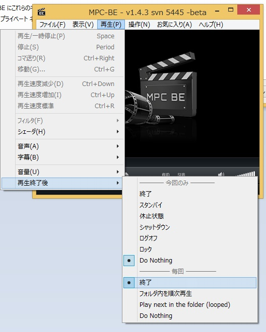
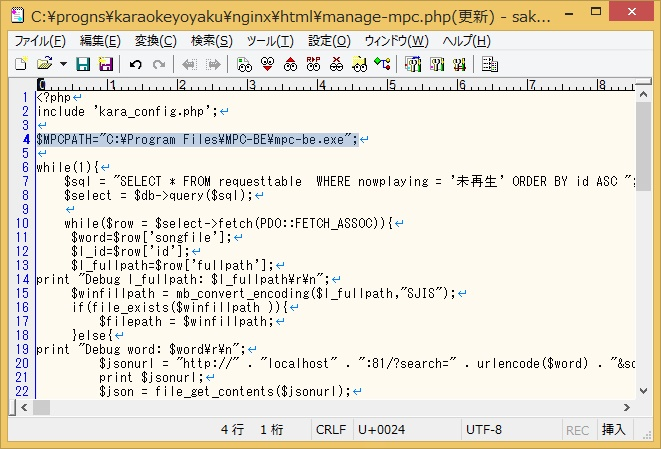

(2015年2月5日バージョン)


- ツールのダウンロード
にアクセスして
releaseのところをクリック。
release画面から最新版のバイナリ(sourceじゃない.zipファイル)をダウンロード。
- ツールの展開
zipファイルを読み書き可能なところに展開する。(作者はc:\prognsというフォルダを作ってそこに展開してます)
- ファイル検索ソフトのインストールと設定
everything file searchをがインストールされていなければダウンロードしてきてインストール。
ダウンロード先
http://www.voidtools.com/
http://www.voidtools.com/
対象の動画ファイルだけが検索できるように設定する。
「検索データ」→「NTFS」の設定ですべてのドライブで「データベースに含める」のチェックを外す。(意図しない場所にあるファイルが検索されないようにするため)
「検索データ」→「フォルダ」の設定に、動画が入っているディスク＆フォルダを追加する。
後でディスクを追加したときは、ここに追加設定をする。
「検索データ」→「除外」設定の中の「検索対象を以下のファイルのみに制限する」の欄に、
動画の拡張子を設定する。
例）
動画の拡張子を設定する。
例）
*.mp4;*.ave;*.mkv;*.flv;*.mpg;*.mov
ほかのファイル形式とかあるならそれも追記する。
「OK」もしくは「適用」で設定を反映させると、
Windows ファイアウォールの設定画面が出るので、両方のネットワークを通信許可するようにチェックを入れて「アクセスを許可する」ボタンを押す。
Windows ファイアウォールの設定画面が出るので、両方のネットワークを通信許可するようにチェックを入れて「アクセスを許可する」ボタンを押す。
- ネットワークの設定
ポータブルWiFiなどでネットワークに接続する。
WiFiアクセスポイントでは「プライバシーセパレータ」などの機能はOFFにしておく。
WiFiアクセスポイントでは「プライバシーセパレータ」などの機能はOFFにしておく。
コマンドプロンプトを開き
ipconfigコマンドを実行する
「IPv4 アドレス」で表示されたIPアドレスが機材PCのIPアドレスになる。
機材PCのIPアドレスと、WiFiアクセスポイントへの接続情報(SSIDとパスワード等)を参加者に伝えてアクセスできるようにする。
【自動再生機能を使い場合の設定】
- 動画再生ソフトのインストールとパス指定
MediaPlayerClassic -BEもしくは-HCがインストールされていなかったらダウンロードしてきてインストール。
MPC-BEのダウンロード先
MPC-BEのダウンロード先
64bitPCでも、x64版じゃなくてx86版の方がおすすめ
MPC-BE(-HC)を起動して各種設定。
「再生」設定で、再生を1回に設定
「フルスクリーン」設定で
「フルスクリーンでファイルを開く」にチェックを入れ、
動画を表示したいモニターの種類を選ぶ。
動画を表示したいモニターの種類を選ぶ。
「ウェブ インタフェース」設定で「このポートで待機：」にチェックを入れ、右の番号を「13579」とする。
「OK」もしくは「適用」で設定を反映させると、
Windows ファイアウォールの設定画面が出るので、両方のネットワークを通信許可するようにチェックを入れて「アクセスを許可する」ボタンを押す。
Windows ファイアウォールの設定画面が出るので、両方のネットワークを通信許可するようにチェックを入れて「アクセスを許可する」ボタンを押す。
再生終了時にPlayerが終了するように
「再生」→ 「再生終了後」 → 「毎回」：「終了」を選択しておく。

展開した、カラオケツールの中の
nginx\html\manage-mpc.php の中の
nginx\html\manage-mpc.php の中の
$MPCPATH=～の行に、MPC-BE(-HC)がインストールされた場所を記入する。
例）
・32bitWindowsの場合
・32bitWindowsの場合
$MPCPATH="C:\Program Files\MPC-BE\mpc-be.exe";
・64bitWindowsに32bit版Playerをインストールした場合
$MPCPATH="C:\Program Files (x86)\MPC-BE\mpc-be.exe";
・64bitWindowsに64bit版Playerをインストールした場合
$MPCPATH="C:\Program Files\MPC-BE\mpc-be.exe";

以上で準備完了。
- ツールの起動
ツールを展開したフォルダの、karaokeyoyaku直下にある。
start.bat
start.bat
をダブルクリック等で起動する。
これで、ブラウザから
http://[機材PCのIPアドレス]/request.php
にアクセスするとツールのトップページになるはず
なにかの拍子で、ツールにアクセスできなくなったときは、
start.batを起動したコマンドプロンプトを右上の×ボタンを押して終了させて(もしかしたらもうなくなっているかも)
もう一度start.batを起動すると復帰することがよくあります。
それか、Wifiアクセスポイントを再起動すると復帰することもよくある。
- 自動再生Playerの起動
ツールを展開したフォルダ内
karaokeyoyaku\nginx\html 内にある
autoplaystart_mpc.bat
をダブルクリックなどで起動。
をダブルクリックなどで起動。
リクエストされた動画の中の一番下の「未再生」となっているものから再生され続けます。
何かの拍子で自動再生が止まってしまった場合、
もう一度、
autoplaystart_mpc.bat
を起動する。
最後終了するときは、
autoplaystart_mpc.batを起動したときに開いたコマンドプロンプトを右上の×ボタンを押して終了させる。